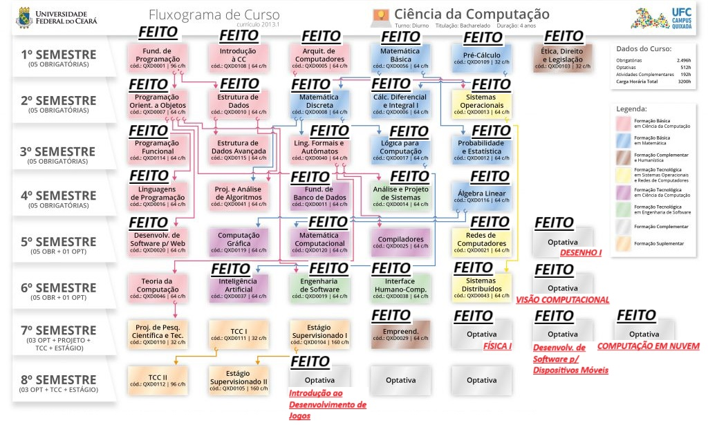

Formação Acadêmica
-
Bacharelado em Ciências da Computação
Universidade Federal do Ceará - Campus Quixadá (2019 - Presente)
Desenvolvimento de habilidades em programação e muito mais.
O atraso no curso se deve à pandemia de COVID-19 e à greve nas universidades federais, que interromperam as atividades acadêmicas. Além disso, enfrentei desafios pessoais e familiares que dificultaram a continuidade dos estudos. Agradeço pela compreensão e estou determinado a superar essas dificuldades para concluir o curso.
 -
Cursos de Extensão e Certificações
Participação em cursos como o da AWS Cloud, Lógica de Programação em JavaScript fornecida pela plataforma DIO e Básico em Ciências de Dados pelo Instituto Atlântico.
Estou focado em aprimorar minhas habilidades em programação básica e explorar novas áreas, buscando assim definir melhor o caminho a seguir em minha carreira. Futuramente, irei adicionar mais cursos e certificações que irei realizar.
Habilidades
- Programação em JavaScript, Python e C
- Banco de dados MySQL e MongoDB
- Conhecimento em serviços de nuvem (AWS)
- Desenvolvimento web (HTML, CSS, JavaScript)
- Metodologias ágeis (Scrum e Kanban)
Experiência Profissional
-
Estagiário em...
Empresa X (Data de início - Data de término)
No momento, estou em busca da minha primeira oportunidade de estágio, que considero essencial para iniciar minha trajetória profissional.
-
Projetos em Grupo
O Gamepedia foi um site desenvolvido por mim e pela equipe como parte de uma apresentação para avaliação nas disciplinas de Engenharia de Software e Análise e Projeto de Sistemas. O Gamepedia é, essencialmente, um fórum que permite a interação entre usuários, onde eles podem avaliar e discutir os jogos apresentados.
Foi informado que o sistema não está acessando os dados do back-end, possivelmente devido a problemas no Heroku. Estamos investigando para resolver a situação.
Resultados de Testes Comportamentais
Recentemente, realizei alguns testes comportamentais e os resultados ajudaram a entender melhor meu perfil e áreas a serem desenvolvidas.
Seção Resultados de Teste


Meu Currículo
Veja a prévia do meu currículo abaixo:
Para mais detalhes sobre minhas qualificações e experiências, você pode acessar meu currículo completo no link abaixo:
Baixar Currículo